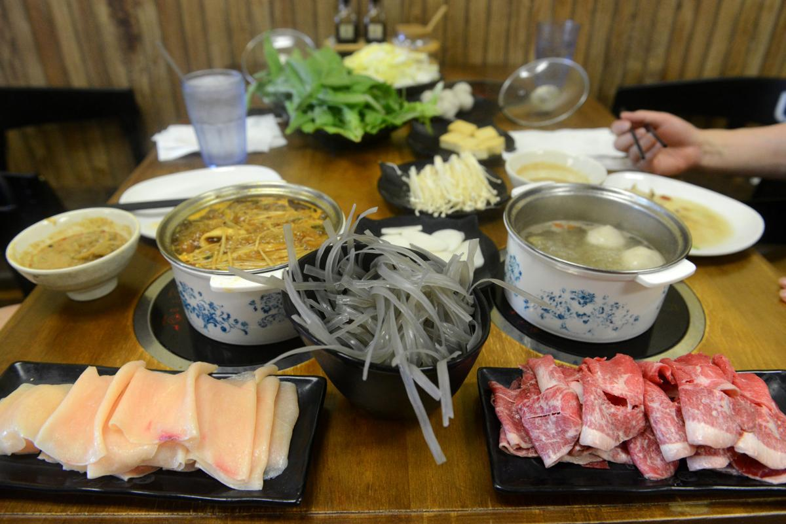
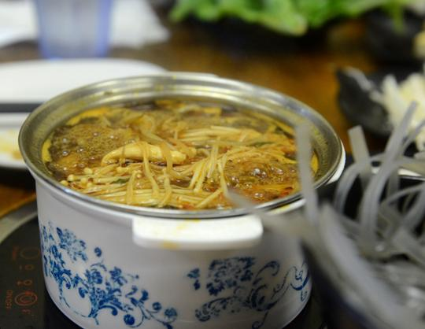

By Xiyuan Zhang
Columbia Missourian. Dec. 26.
Violet Vonder Haar, shown here in 2017, will be performing with Violet & The Undercurrents on New Year’s Eve at Rose Music Hall. Also on the bill are The Royal Furs and Ok Samaritan.
The following are the upcoming events for New Year's Eve in Columbia. There is no citywide celebration this year, but several local businesses will hold events for the community.
SILVERBALL NYE 2019 PARTY
Address: Silverball, 122 S. Ninth St.
Time: 9 p.m.-1 a.m.
Details: $25 ticket for unlimited slushies and drinks; an additional $25 will provide access to the dance lounge and free champagne at midnight. Forty VIP seats are available. Tickets can be purchased at silverball.yapsody.com.
'ANOTHER ONE BITES THE DUST' NYE CELEBRATION
Address: The Social Room, 220 N. Eighth St.
Time: 8 p.m.
Details: Wear your best-looking leather pants and join in the party! $25 tickets, but no cover. Free entrance to the pool and arcade games will be provided from 8 to 9 p.m. Free champagne at midnight. Resident DJ LEXXY and Host DJ Bwaha will perform. If you want guaranteed party entry, you can buy one of 50 Elite tickets that include skip-the-line privileges, one bottle of champagne and a gift bag. Tickets available on eventbrite.com.
2K19 CELEBRATION
Address: The Penguin Piano Bar & Nightclub, 1025 E. Broadway
Time: 9 p.m.-1 a.m.
Details: Pianists Ryan Smith, Dave Hawke and Stephen Winter and DJs Seoul Train and Umami will perform. The 50 Elite tickets available are $25, online purchase only. There are $35 tickets for guaranteed party entry. The cover will be $10 on a first-come, first-served basis. Table and booth reservations are available at penguincomo.com, and tickets are available at eventbrite.com.
Here are all the things you should check out for New Year's Eve.
NEW YEAR'S EVE JAZZ BASH
Address: Broadway Brewery, 816 E. Broadway
Time: 5 p.m.-1:30 a.m.
Details: Live jazz. Acoustic trio performance from 6:30 to 8:30 p.m. Columbia Jazz Orchestra performing from 10 p.m. to midnight. Reservations are available at (574)-443-5054. People can buy food at the event.
NEW YEAR'S EVE
Address: The Tiger Hotel, 23 S. Eighth St.
Time: 7 p.m.-1 a.m.
Details: Passholders only. Party ticket reservations are available at thetigerhotel.com.
DECADANCE: A NEW YEAR'S CELEBRATION AT THE BLUE NOTE
Address: The Blue Note, 17 N. Ninth St.
Time: 7 p.m.-11:59 a.m.
Details: A dance party with a performance from DJ Requiem celebrating 100 years of dance music. $15 tickets, $200 VIP Boxes. Open to adults 21 years and older. Tickets available at thebluenote.com.
By Emmy Lucas
Vox Magazine. Oct, 3

There’s a popular saying in China, “everything can be solved by one hot pot; if not, it can be solved by two.” This speaks to the importance of this traditional dish in Chinese culture. Hot pot involves plates of ingredients and a simmering pot of broth, but what do you do with them? This guide will help novices know how to try this classic dish and provide pros some ideas to try.
Hot pot is a communal dining experience where everyone shares one pot of cooking broth and takes turns adding ingredients. The dish reflects a dining custom that dates back thousands of years in China where families and strangers alike eat together and socialize as they dine. According to a 2018 article in the South China Morning Post, hot pot’s origins aren’t clear, but it developed differently in different regions — from the spicy, numbing broth of Szechuan to the gentle, fragrant tastes from Jiangsu.
To start, decide on a soup base and ingredients. Min Wang, the quality inspector of Taste Place on North Stadium Boulevard, says it is important to consider which ingredients will give your broth the flavor and spiciness you prefer. The broths are usually served with customers choosing the flavors they want; For instance, Taste Place offers over eight bases on its menu. The ingredients of hot pot are brought to the table raw. The selections include different meats, vegetables and noodles. Some classic ingredients include sliced meats, cabbage, mushrooms, rice noodles and potatoes.
At Taste Place, each ingredient comes to your table on a separate plate. Tao Tan, a Taste Place customer, says her favorite is a seafood combination of fish tofu and fish balls with a spicy fish-based broth. Her husband, Jon Zhang, says he chooses more vegetables for his hot pot.

Enoki mushrooms, fish balls, fish tofu, lettuce and rice noodles cook in a hot, spicy fish broth at Taste Place for the traditional Chinese dish hot pot.
Dipping sauce is the finishing touch. Sesame oil and sesame sauce are popular. The price of hot pot varies depending on your choice of broths and ingredients. For instance, on Seasoning 63’s menu, they serve different ingredient combinations and the price starts at $11.99.
Now, it’s time to actually cook the dish. You add the ingredients to the boiling broth that sits on a warmer built into the table. Here is a little trick: Put cabbage, lettuce and spinach in last as they take less time to cook. Once your ingredients are cooked to your liking, take them out and dunk them in your dipping sauce.
A benefit of eating hot pot with others is socialization. It’s a perfect time to chat with friends and family. For Zhang and Tan, hot pot is their weekly tradition. “We like taking the time to enjoy it, whether it’s a holiday, family visiting or whatever,” Tan says. “It’s nice to sit down and enjoy a long meal."